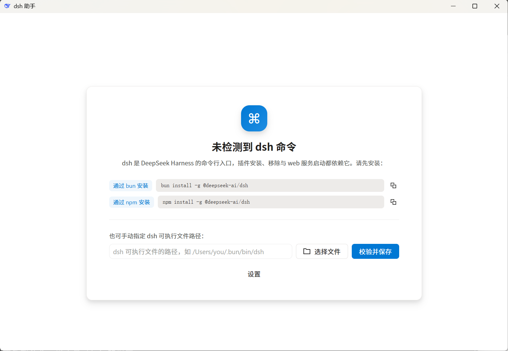
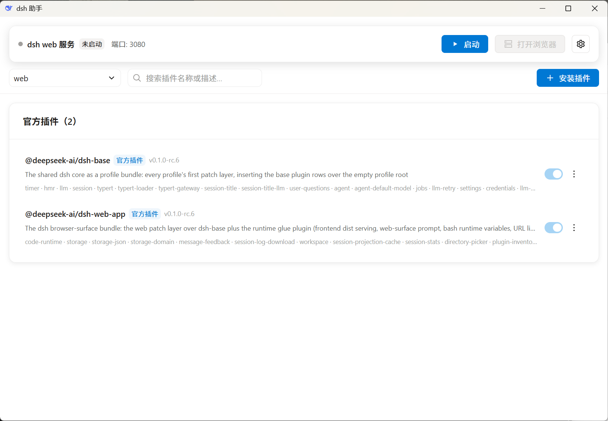
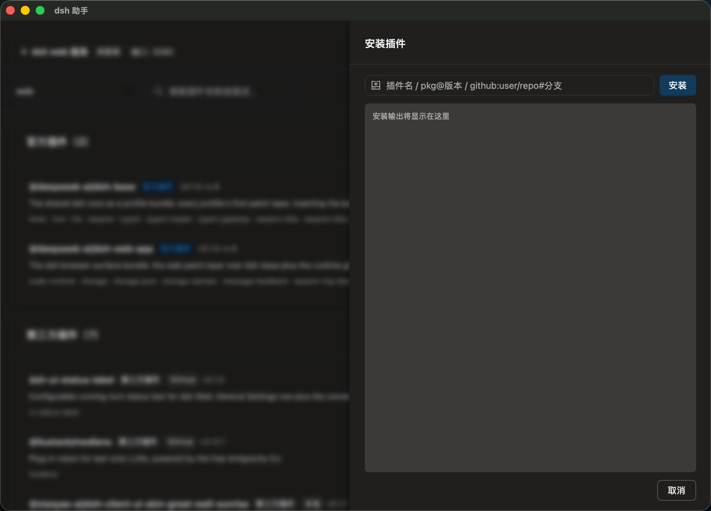
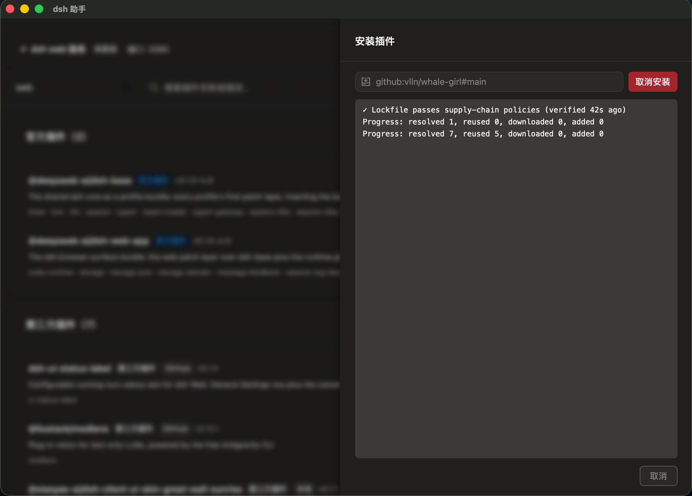
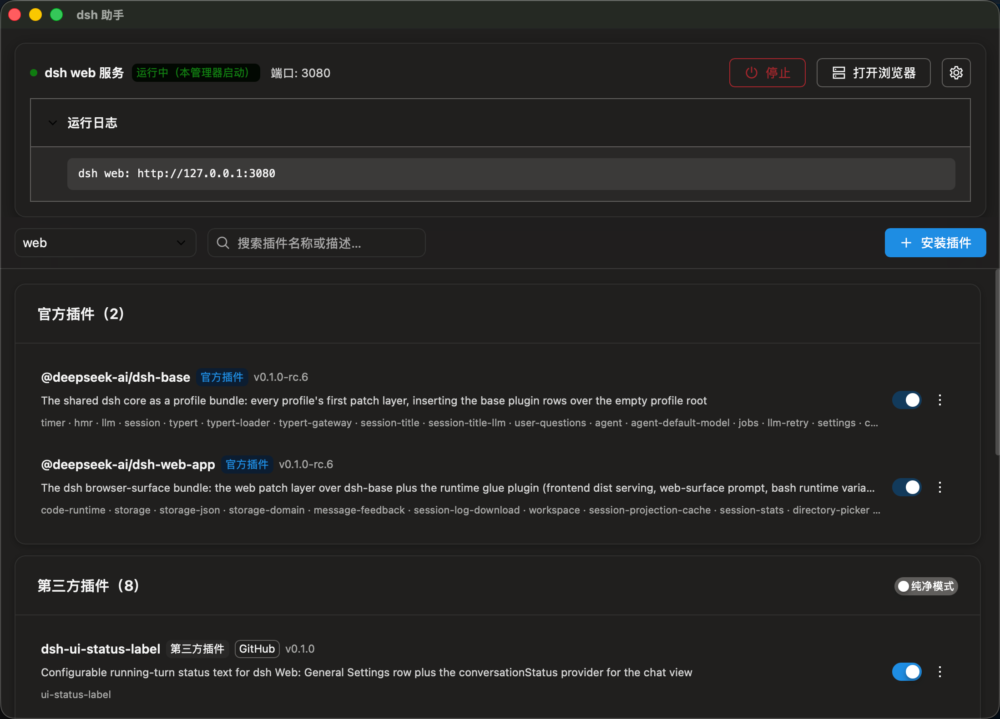
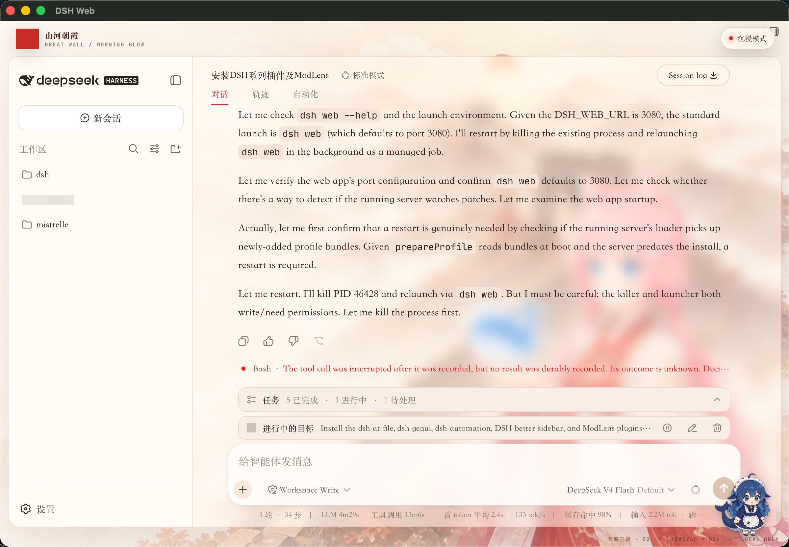
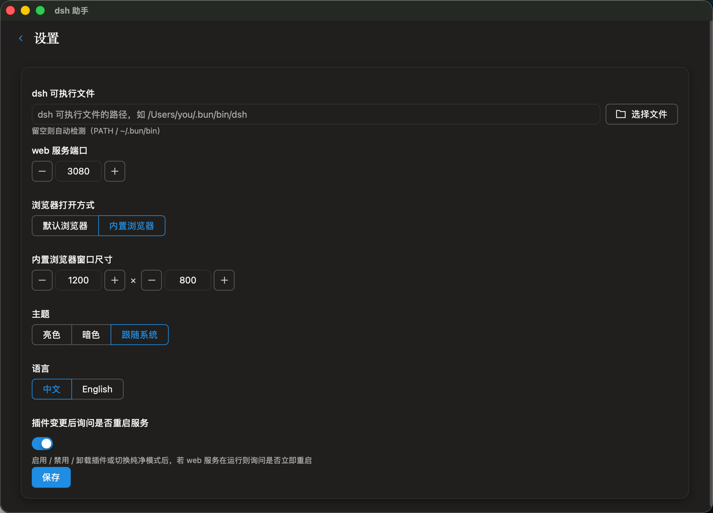
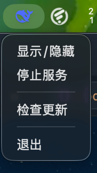

核心功能
能点鼠标解决的事，就别手改 yml 了
🎯
粘贴 spec 一键安装
npm 包名 / pkg@version / GitHub 源直装，实时彩色日志，随时一键取消。
📦
启停 · 更新 · 移除
按 profile 管理插件，由官方 dsh CLI 驱动，比手改 package.json 更稳。
🧹
纯净模式
一键屏蔽第三方插件，官方生态干净稳定。
🌐
Web 服务一键启停
默认浏览器或内置浏览器窗口直接打开，端口可配置。
🖥️
托盘常驻
关窗不退出，菜单栏随时启动服务、唤回窗口。
🔔
应用自动更新
静默检查新版本，Ed25519 签名校验，一键重启完成升级。
界面预览
从缺失引导到插件管理，覆盖日常使用场景


开箱即用，缺失自动引导
解析不到 dsh 时进入全屏引导页：自动探测 bun / npm 并给出安装命令，可一键安装、手动指定路径，检测通过后直接进入首页。
- bun / npm 探测 + 一键安装
- 手动路径 / 文件选择 / 版本校验


粘贴 spec 直装
粘贴完整 spec（npm 包名 / pkg@version / github:user/repo#branch）即装，CLI 输出经 ANSI 解析渲染为彩色日志，安装 / 更新均可一键取消。
- npm 与 GitHub 源都吃
- 实时彩色日志，可中断
插件列表一目了然
官方 / 第三方分组展示，支持搜索过滤、启用 / 禁用、更新移除；纯净模式开关一键屏蔽第三方。
- 官方（@deepseek-ai/）插件不可误伤
- 搜索实时过滤，空态友好提示

Web 服务一键启停
后台启动 dsh web 服务（默认 127.0.0.1:3080），状态实时判定；点击「打开」默认走系统浏览器，也可配置为内置浏览器窗口。
- 运行状态基于 PID + 端口监听双重判定
- 内置浏览器窗口单例复用、宽高可配

内置浏览器直达
设置里选择「内置浏览器」后，点击打开即弹出独立窗口加载 dsh web 页面，无需切换应用。


设置与托盘
dsh 路径、端口、浏览器打开方式、主题、语言集中管理；菜单栏托盘常驻，关窗不退出，随时启停服务或唤回窗口。
- 亮色 / 暗色 / 跟随系统
- 托盘：显示 / 启停服务 / 退出
技术栈
原生桌面应用，不是套壳
Go + Wails v3
桌面壳与原生能力
Vue 3 + TDesign
界面与交互
官方 dsh CLI
插件生态驱动
Apache-2.0
开源协议